Los actinoides (nombre recomendado por la IUPAC) o actínidos son un grupo de elementos que forman parte del periodo 7 de la tabla periódica. Estos elementos, junto con los lantánidos, son llamados elementos de transición interna. El nombre procede del elemento químico actinio, que suele incluirse dentro de este grupo, que da un total de 15 elementos, desde el de número atómico 89 (el actinio) al 103 (lawrencio).
Estos elementos presentan características parecidas entre sí. Tienen un alto número atómico, y algunos como el Uranio se encuentran en ínfimas cantidades en la naturaleza y tienen tiempos de vida media cortos; todos sus isótopos son radiactivos.
El actinio es un elemento químico de símbolo Ac y número atómico 89, perteneciente al grupo IIIB, periodo 7 y bloque D de la tabla periódica de los elementos. Es una de las tierras raras y da nombre a una de las series, la de los actínidos. Es un metal radiactivo blando que reluce en la oscuridad.
Configuración electrónica: [Rn] 6d17s2
Masa atómica: 227 u
Número atómico: 89
Descubrimiento: 1899
Electronegatividad: 1.1
Descubridor: André-Louis Debierne
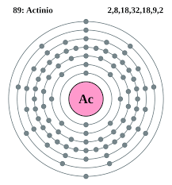El torio es un elemento químico, de símbolo Th y número atómico 90, de la serie de los actínidos. Se encuentra en estado natural en los minerales monacita, torita y torianita. En estado puro es un metal blando de color blanco-plata que se oxida lentamente.
Configuración electrónica: [] ⦏Rn⦐6d²7s²
Descubrimiento: 1828
Número atómico: 90
Masa atómica: 232,03806 u
Punto de ebullición: 4.787 °C
Descubridor: Jöns Jacob Berzelius
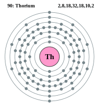El protactinio es un elemento químico de la tabla periódica cuyo símbolo es Pa y su número atómico es 91. El elemento fue identificado por primera vez en 1913 por Kazimierz Fajans y Oswald Helmuth Göhring y llamado brevium debido a la corta vida media del isótopo específico estudiado, es decir, protactinio-234.
Configuración electrónica: [Rn] 5f26d17s2
Masa atómica: 231,03588 u
Descubrimiento: 1913
Número atómico: 91
Punto de fusión: 1.568 °C
Descubridores: Kasimir Fajans, Oswald Helmuth Göhring
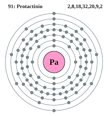El uranio es un elemento químico metálico de color plateado-grisáceo de la serie de los actínidos, su símbolo químico es U y su número atómico es 92. Por ello posee 92 protones y 92 electrones, con una valencia de 6.
Número atómico: 92
Configuración electrónica: [Rn] 5f36d17s2
Masa atómica: 238,02891 u
Descubrimiento: 1789
Punto de fusión: 1.132 °C
Descubridor: Martin Heinrich Klaproth
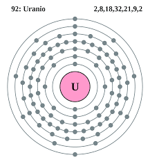El neptunio es un elemento transuránico de la tabla periódica cuyo símbolo es Np y su número atómico es 93. Cuarto de la familia de los actínidos o segundo período de transición interna del sistema periódico de los elementos. Su nombre proviene del planeta Neptuno.
Descubrimiento: 1940
Configuración electrónica: [Rn] 5f46d17s2
Masa atómica: 237,0482 u
Número atómico: 93
Serie química: Metal, Actínido, Metal pesado, Elementos del periodo 7
Descubridores: Edwin Mattison McMillan, Philip Hauge Abelson
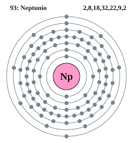El plutonio es un elemento transuránico radiactivo con el símbolo químico Pu y el número atómico 94. Es un metal actínido con apariencia gris plateada que se oscurece cuando es expuesto al aire, formando una capa opaca cuando se oxida. El elemento normalmente exhibe seis estados alotrópicos y cuatro de oxidación.
Número atómico: 94
Descubrimiento: 14 de diciembre de 1940
Configuración electrónica: [Rn] 5f67s2
Masa atómica: 244 u
Electrones por nivel: 2,8,18,32,24,8,2
Descubridores: Joseph W. Kennedy, Glenn T. Seaborg, Edwin Mattison McMillan, Arthur Wahl
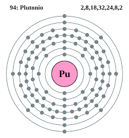El americio es un elemento químico artificial de número atómico 95 situado dentro del grupo de los actínidos en la tabla periódica de los elementos. Su símbolo es Am. Todos sus isótopos son radiactivos y no existen en la naturaleza. Su nombre proviene de América, de forma análoga al europio
Configuración electrónica: [Rn] 5f77s2
Masa atómica: 243 u
Descubrimiento: 1944
Número atómico: 95
Punto de ebullición: 2.607 °C
Descubridores: Glenn T. Seaborg, Albert Ghiorso, Ralph A. James
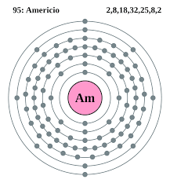El curio es un elemento sintético de la tabla periódica cuyo símbolo es Cm y su número atómico es 96. Se produce bombardeando plutonio con partículas alfa. Es un actínido. El curio no existe en el ambiente terrestre, pero puede producirse en forma artificial.
Masa atómica: 247 u
Configuración electrónica: [Rn] 5f76d17s2
Número atómico: 96
Descubrimiento: 1944
Electronegatividad: 1,3
Descubridores: Glenn T. Seaborg, Albert Ghiorso, Ralph A. James
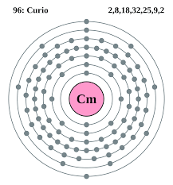El berkelio es un elemento sintético de la tabla periódica cuyo símbolo es el Bk y su número atómico es 97. Pertenece a la serie de los actínidos y elementos transuránicos
Configuración electrónica: [Rn] 5f97s2
Número atómico: 97
Descubrimiento: 1949
Masa atómica: 247 u
Punto de ebullición: 2.627 °C
Descubridores: Glenn T. Seaborg, Albert Ghiorso
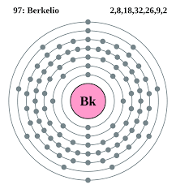El californio es un elemento químico radiactivo con símbolo Cf y número atómico 98. Este elemento fue obtenido por primera vez en la Universidad de California en Berkeley en 1950 bombardeando curio con partículas alfa —iones de helio-4—.
Número atómico: 98
Configuración electrónica: [Rn] 5f107s2
Masa atómica: 251 u
Descubrimiento: 17 de marzo de 1950
Electronegatividad: 1,3
Descubridores: Glenn T. Seaborg, Albert Ghiorso
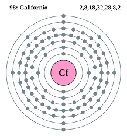El einstenio es un elemento sintético de la tabla periódica cuyo símbolo es Es y su número atómico es 99.
Electronegatividad: 1,3
Número atómico: 99
Masa atómica: 252 u
Configuración electrónica: [Rn] 5f117s2
Descubrimiento: diciembre de 1952
Descubridores: Albert Ghiorso, Glenn T. Seaborg
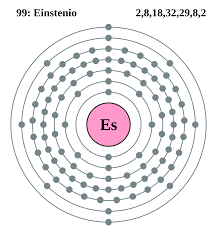El fermio es un elemento químico radiactivo creado artificialmente cuyo número atómico es 100 y de peso atómico 254, de símbolo Fm. Existen 16 isótopos conocidos siendo el ²⁵⁷Fm el más estable con un periodo de semidesintegración de 100,5 días.
Número atómico: 100
Configuración electrónica: [Rn] 5f127s2
Descubrimiento: 1953
Masa atómica: 257 u
Descubridores: Albert Ghiorso, Glenn T. Seaborg
Serie química: Metal, Actínido, Metal pesado, Elementos del periodo 7
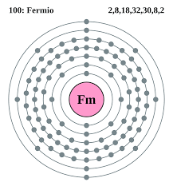El mendelevio es un elemento de la tabla periódica cuyo símbolo es Md y su número atómico es 101. El nombre de este elemento proviene del creador de la tabla periódica de los elementos: Dmitri Mendeleyev.
Configuración electrónica: [Rn] 5f137s2
Número atómico: 101
Descubrimiento: 1955
Masa atómica: 258 u
Electronegatividad: 1,3
Descubridor: Glenn T. Seaborg
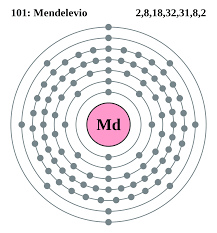El nobelio es un elemento sintético de la tabla periódica cuyo símbolo es No y su número atómico es 102, llamado así en honor del inventor Alfred Nobel. Es el 11.er elemento sintético de la tabla periódica. Su decaimiento se realiza por emisión de partículas alfa, es decir, un ion de helio doblemente cargado.
Masa atómica: 259 u
Número atómico: 102
Configuración electrónica: [Rn] 5f147s2
Electronegatividad: 1,3
Punto de fusión: 826,8 °C
Descubrimiento: 1958
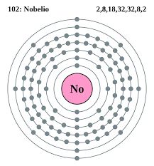El lawrencio o laurencio es un elemento sintético radiactivo de la tabla periódica de los elementos cuyo símbolo es Lr y su número atómico es 103. En la tabla periódica, se sitúa en el bloque d y en el período 7, y es el último elemento y el más pesado de la serie de los actínidos.
Configuración electrónica: [Rn] 5f147s27p1
Número atómico: 103
Masa atómica: 262 u
Descubrimiento: 14 de febrero de 1961
Punto de fusión: 1.627 °C
Descubridores: Laboratorio Nacional Lawrence Berkeley, Albert Ghiorso
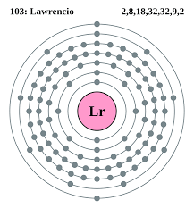